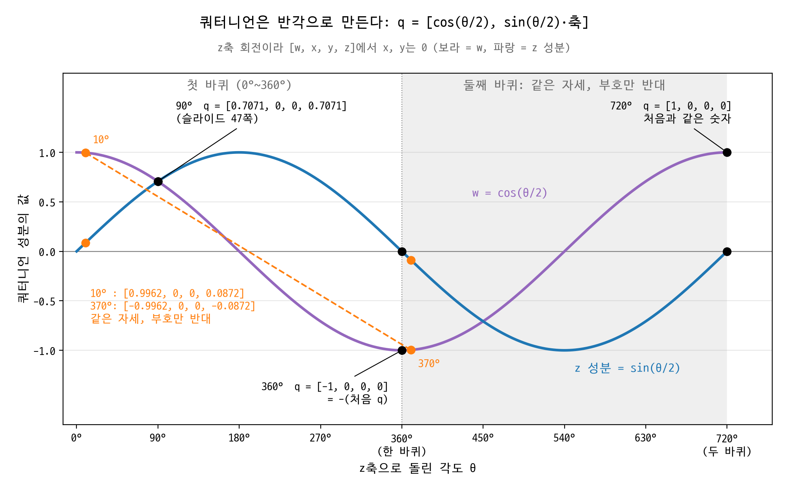

먼저 평면의 화살표를 돌립니다. 그 장면에서 출발해 공간의 회전을 적고 고르게 잇는 방법을 봅니다.
오른쪽3, 위로2를 한 줄에 적어 봅니다
복소수와 회전행렬을 식으로 연결
원점에서 오른쪽3칸, 위로2칸 가면 (3,2)입니다. 원점에서 그 점으로 화살표를 그려도 됩니다. 이것을 3+2i라고 적으면 같은 두 숫자를 담을 수 있습니다.
| 표시 | 뜻 |
|---|---|
| 3 · 실수 부분 | 가로로3, 오른쪽 |
| 2i · 허수 부분 | 세로로2, 위쪽 |
| 3+2i · 복소수 | 두 숫자를 한 수에 함께 적음 |
복소수는 이렇게 두 숫자를 한 수로 묶어 계산하는 방법입니다. i는 그림에서 위로 한 칸인 자리에 놓습니다. 이름이 “허수”라고 해서 없는 방향을 상상할 필요는 없습니다. 이제 곱셈 규칙을 붙이면 회전을 계산할 수 있습니다.
먼저 처음으로를 눌러 오른쪽 화살표1을 봅니다. i를 한 번 곱하기를 한 번씩 누르고 돌아간 자리를 보세요. 오른쪽1 → 위i → 왼쪽−1 → 아래−i → 다시1입니다. 곱할 때마다 반시계90° 돕니다. 아직 모르는 결과를 먼저 맞힐 필요는 없습니다.
i × i = −1, 즉 i²=−1
1 → i → −1 → −i → 1
두 번 돌리면 왼쪽이어서 i²=−1이고, 네 번이면 처음입니다. −1은 잘못된 값이 아니라 오른쪽의 반대쪽입니다.
60°도 곱셈으로 돌려 봅니다
시범 아래쪽에서 z=3과 60°를 누릅니다. z는 오른쪽으로 길이3인 화살표입니다. 결과는 1.5+2.598i, 좌표로는 (1.5,2.598)입니다. 앞 수업 손그림의 길이3 막대를60° 돌린 바로 그 예입니다.
60° 방향의 길이1 화살표는 가로 cos60°=0.5, 세로 sin60°≈0.866입니다. 이렇게 길이1인 수 cosθ+i sinθ를 곱하면 θ만큼 돌고 원래 길이는 유지합니다.
(a+bi)(cosθ+i sinθ)
=(a cosθ−b sinθ)+i(a sinθ+b cosθ)
가로 결과와 세로 결과가 익숙한 회전행렬의 두 줄입니다.
모든 복소수 곱셈이 회전만 하는 것은 아닙니다. 곱하는 수의 길이가1이어야 길이가 유지됩니다.2i는90° 회전과 길이 두 배를 함께 만듭니다. 오른쪽3에 i를 곱하면 위3i,2i를 곱하면 위6i입니다.
여기까지는 평면입니다. 앞·왼쪽·위가 있는 물체의3차원 자세에는 더 넓은 계산 도구가 필요합니다. 다음의 쿼터니언은 그 일을 하는 네 숫자의 묶음입니다.
네 숫자로 z축90° 회전을 적습니다
책상에 앞을 표시한 막대를 놓고 위에서 봅니다. 가운데 축은 붙잡고 막대만 왼쪽으로 돌립니다. 이 한 번의 90° 회전을 쿼터니언 네 칸에 적겠습니다.


반각·단위 쿼터니언·감싸 곱하기
물체의 앞 화살표 (1,0,0)을 위쪽 z축 둘레로90° 돌려 (0,1,0)에 놓겠습니다. 같은 회전을 쿼터니언 q=(w,x,y,z)로 적으면 약 (0.7071,0,0,0.7071)입니다.
쿼터니언은 복소수를 넓힌 숫자 체계입니다. 회전에서는 실수 칸 하나와 방향에 관한 칸 세 개를 함께 씁니다. 네 숫자가 네 개의 독립 회전이나 물리 공간의 네 번째 축은 아닙니다.
| 칸 | 이번 값 | 역할 |
|---|---|---|
| w | cos45°≈0.7071 | 반각에서 만든 실수 부분 |
| (x,y,z) | (0,0,sin45°)≈(0,0,0.7071) | 단위축×반각의 사인 |
기존 회전 조작실의 쿼터니언으로 회전 단계에서 물체축을 보고 회전축 하나를 골라 움직여 보세요. 보조 조작실은 x,y,z,w 순서로 표시합니다. 이 수업의 w,x,y,z와 순서가 다르므로 칸 이름을 보고 대조합니다.
단위축은 방향을 유지하고 길이를1로 맞춘 화살표입니다. 그 축을 k=(kₓ,kᵧ,k_z), 실제 회전각을 θ라고 하면 다음 규칙으로 만듭니다.
w²+x²+y²+z²=1 · 단위 쿼터니언
z축90°: k=(0,0,1), θ/2=45°
네 수의 제곱합이1인 것이 단위 쿼터니언의 조건입니다.90° 예에서는0.7071²+0.7071²≈1입니다. 표시값을 반올림해 작은 차이가 날 수 있습니다.
뒤의 세 숫자는 회전벡터와 다릅니다
같은 z축90°의 회전벡터는 (0,0,π/2)≈(0,0,1.5708)rad입니다. 쿼터니언의 뒤 세 수는 (0,0,0.7071)입니다. 전자는 축×각도, 후자는 축×sin(반각)이므로 그대로 복사해 바꿔 쓸 수 없습니다.
왜 실제90°인데 만들 때45°를 쓸까요?
평면의 복소수는 한 번 곱했습니다. 쿼터니언으로 화살표를 돌릴 때는 앞뒤에서 감싸 곱하는 규칙을 씁니다. 전체 결과가 θ만큼 돌도록 q를 반각으로 만듭니다.
p′=q p q⁻¹
z축90°인 q: (1,0,0) → (0,1,0)
p는 화살표를 계산에 넣으려고 첫 칸에0을 붙인 것입니다. 최종 p′의 뒤 세 수가 돌아간 화살표입니다. 중간 q p가 언제나3차원 벡터라거나, 앞뒤 곱이 각각 실제45° 회전이라고 나누어 해석하지 않습니다. 전체 q p q⁻¹이90°를 만듭니다.
기호와 소프트웨어 순서 · 선택 상세
쿼터니언을 w+xi+yj+zk라고도 씁니다. i,j,k는 곱셈 규칙을 가진 기호입니다. ij=k이지만 ji=−k이므로 순서가 중요합니다. 이 규칙을 전부 외우기보다 축·각도·입출력을 먼저 연결합니다.
이 수업의 도구와 MuJoCo quat/xquat은wxyz, SciPy 기본 as_quat()은xyzw입니다. scalar_first=True이면wxyz입니다. 같은 값이라도 다른 칸에 넣으면 다른 회전이 됩니다.
02-frames-rotations\b13_quat_basic.py · 읽을 줄 1–14
cd C:\code\src\robo\vol3\02-frames-rotations
..\..\.venv\Scripts\python.exe b13_quat_basic.pyz축 90도 쿼터니언 [w x y z]: [0.7071 0. 0. 0.7071]
길이: 1.0
x축을 돌리면: [0. 1. 0.]
scipy as_quat() : [0. 0. 0.7071 0.7071]
scipy as_quat(scalar_first=True): [0.7071 0. 0. 0.7071]z축 90도를 [w x y z] 네 수로 적고 SciPy의 두 가지 순서와 나란히 찍습니다. 같은 자세인데 숫자 위치가 다릅니다.
이 쪽의 그림을 만든 파일(같은 폴더, 실행하면 그림 PNG를 저장): 02-frames-rotations\s47_quaternion_half_angle.py
이 쪽의 예제가 불러 쓰는 도우미 파일(직접 실행하지 않고 같은 폴더에 둡니다): 02-frames-rotations\quaternion_tools.py
두 회전 잇기와 같은 자세의 두 표기
앞을 향한 막대를 그 막대 자체의 x축으로 돌리면 앞 방향은 그대로입니다. 이어 고정 z축으로 돌리면 왼쪽으로 갑니다. 이 순서를 쿼터니언 곱으로 이어 적습니다.
해밀턴 곱과 q·−q의 같은 자세
앞 (1,0,0)을 x축으로90° 돌리면 x축 위이므로 그대로입니다. 그다음 z축으로90° 돌리면 (0,1,0)입니다. 회전을 이어 붙일 때 쿼터니언도 곱합니다.
q_z = 축각_쿼터니언([0,0,1], 90)
q_x = 축각_쿼터니언([1,0,0], 90)
합성 = 곱(q_z, q_x) # 이 도구에서는 x 먼저, z 나중이 해밀턴 곱은 행렬 Rz@Rx와 대응하며 배열 원소별 곱 q_z*q_x와 다릅니다. 순서를 바꾸면 일반적으로 자세도 달라집니다.
q와−q는 다른 숫자로 같은 회전을 적습니다. (0.7071,0,0,0.7071)과 (−0.7071,0,0,−0.7071)은 모두 앞 (1,0,0)을 (0,1,0)으로 보냅니다. 숫자 네 칸이 다르다고 자세도 다르다고 판정하지 않습니다.
두 자세의 차이를 구하는 식
절댓값은 q와−q가 같은 자세임을 반영합니다. clamp는 작은 수치 오차로1을 넘는 일을 막습니다. 결과는 두 자세 사이의 회전각이며 공간에서 이동한 거리가 아닙니다.
02-frames-rotations\b14_quat_compose.py · 읽을 줄 1–17
cd C:\code\src\robo\vol3\02-frames-rotations
..\..\.venv\Scripts\python.exe b14_quat_compose.py곱(q_z, q_x) == Rz(90) @ Rx(90) ? True
곱(q_x, q_z) == 곱(q_z, q_x) ? False
쿼터니언으로 돌린 앞: [0. 1. 0.]
행렬로 돌린 앞 : [0. 1. 0.]두 쿼터니언을 곱한 것이 두 회전행렬을 곱한 것과 같고, 순서를 바꾸면 달라집니다.
02-frames-rotations\b15_quat_double.py · 읽을 줄 1–16
cd C:\code\src\robo\vol3\02-frames-rotations
..\..\.venv\Scripts\python.exe b15_quat_double.pyq : [0.7071 0. 0. 0.7071]
-q : [-0.7071 0. 0. -0.7071]
q로 돌린 앞 : [0. 1. 0.]
-q로 돌린 앞: [0. 1. 0.]
내적: -1.0 / 사이각: 0.0 도
10도 : [0.9962 0. 0. 0.0872]
370도: [-0.9962 0. 0. -0.0872]q와 −q는 같은 자세입니다(내적 −1, 사이각 0도). 10도와 370도도 부호만 다른 같은 자세입니다.
길이와 틀린 자세는 다른 문제입니다
똑같은 방향을 향하는 화살표도 숫자 길이는 조금 흐트러질 수 있습니다. 정규화는 그 길이를 맞춥니다. 엉뚱한 방향을 올바른 방향으로 돌려 주는 보정은 아닙니다.
정규화 코드와 센서 오차 구분
반올림하며 회전을 많이 이으면 q의 길이가1에서 벗어날 수 있습니다.0이 아닌 q를 자기 길이로 나눠 길이1로 맞추는 것이 정규화입니다.
q = q / np.linalg.norm(q) # 0이 아닌 q의 길이를1로 맞춤b16_quat_drift.py의 float32 반복 예는 길이 1.000397을 정규화해 1로 맞춥니다(이 PC에서 돌린 값). 하지만 센서가 실제보다5° 더 돌았다고 잘못 알려 줬다면 길이1인 잘못된 자세일 수 있습니다. 정규화가 센서 치우침까지 없애지는 않습니다.
02-frames-rotations\b16_quat_drift.py · 읽을 줄 1–18
cd C:\code\src\robo\vol3\02-frames-rotations
..\..\.venv\Scripts\python.exe b16_quat_drift.py쿼터니언 길이 : 1.000397 (1이어야 함)
회전 행렬 직교성 오차: 0.002233 (0이어야 함)
정규화한 뒤 길이 : 1.000000float32로 회전을 반복해 이으면 쿼터니언 길이가 1에서 벗어나고, 정규화하면 1로 돌아옵니다.
같은 시간마다 같은 각도만큼 돌고 싶습니다
SLERP의 조건과 보간 비교
시계바늘이 원호를 고르게 따라가는 모습을 떠올려 보세요. 같은1초마다 같은 각도만큼 돌면 고르게 움직입니다.3차원 물체도 출발·도착 자세 사이를 그렇게 잇고 싶습니다. 중간 자세를 만들어 잇는 일을 보간이라고 합니다.
한 방법은 롤·피치·요 숫자를 각각 같은 비율로 바꾸는 것입니다. 다른 방법은 두 자세를 단위 쿼터니언으로 적고 짧은 회전 경로를 같은 시간 비율로 따라가는 SLERP입니다. 이름은 spherical linear interpolation, 구면 선형 보간입니다.
따라 하기: 기본 예에서 처음으로 → 재생을 누르고 주황 앞부분과 노란 윗면을 봅니다. 동시에 출발해 같은 자세에 도착하지만 중간 움직임이 다릅니다.4초를 네 칸으로 나눈 표에서 각1초 동안 실제로 돌아간 각도를 읽습니다.
| 같은1초 구간 | 오일러 세 수 선형 변화 | SLERP |
|---|---|---|
| 첫째 | 36.44° | 39.70° |
| 둘째 | 39.89° | 39.70° |
| 셋째 | 42.50° | 39.70° |
| 넷째 | 44.12° | 39.70° |
이 예의 오일러 회전량은 커집니다. 항상 커지는 것은 아닙니다. 예제 선택을 다른 예: 오일러 회전각이 점점 작아짐으로 바꾸면 줄어들고, 한 축만 돌리기: 둘 다 일정에서는 모두22.50°씩 돕니다.
숫자는 같은 시간 간격의 두 자세 사이 실제 회전각입니다. 화면 픽셀이나 물체 중심의 이동거리m가 아닙니다. 회전량을 시간으로 나누면 평균 각속도입니다. 여기서는 한 칸이1초라 숫자가 각각°/s와 대응합니다.
단위 길이의 두 끝점과 시간에 선형인 진행률 t로 SLERP를 하면 두 자세 사이의 각속도가 일정합니다. 쿼터니언을 쓴다는 사실만으로 항상 고른 것은 아닙니다. t를 처음 느리게, 나중 빠르게 바꾸면 같은 경로에서도 속도가 달라집니다.
이 보간이 실제 기계식 짐벌의 축 정렬을 없애거나, 장애물·모터 한계까지 해결하지는 않습니다.
원호 비유에서 구면의 식으로 · 선택 상세
단위 쿼터니언은 네 수의 제곱합이1인 점입니다. 그 구면에서 두 끝을 잇는 호를 같은 비율로 따라갑니다. q와−q가 같은 자세이므로 짧은 경로에 맞게 끝점 부호를 고릅니다.
cosΩ=q₀·q₁, 0≤t≤1
이는 단위 끝점·짧은 경로 부호를 사용한 식입니다. 아주 가까운 끝점은 안정적인 근사와 정규화를 씁니다. 지금은 식을 외우기보다 시범의 같은 시간·같은 회전각을 먼저 연결합니다.
기존 조작실의 보간 경로 비교도 같은 질문을 다른 출발·도착으로 보여 줍니다. 시범 조건이 다르면 숫자까지 같을 필요는 없습니다.
02-frames-rotations\b17_slerp.py · 읽을 줄 1–22
cd C:\code\src\robo\vol3\02-frames-rotations
..\..\.venv\Scripts\python.exe b17_slerp.py시작에서 끝까지 최단 회전: 133.6 도
오일러 섞기: 걸음마다 22.1~ 28.5도, 모두 더하면 256.6도
slerp : 걸음마다 13.4~ 13.4도, 모두 더하면 133.6도ZYX=[170, 60, −120]°에서 출발해 끝까지 10구간으로 나눕니다. 오일러 각 섞기는 합이 256.6°(최단 133.6°의 거의 두 배)이고 구간마다 크기가 다르며, SLERP는 모든 구간이 13.4°입니다.
스스로 확인하기
답은 글에서 찾지 않고 예제를 직접 돌리거나 한 줄 바꿔 돌려서 얻습니다. 숫자는 이 컴퓨터에서 나온 값입니다.
수업 근거와 수치의 범위
1일차 수정 교안55–59쪽과 교과서2.6–2.7(PDF72–79쪽)을 재구성했습니다. 복소수 시범과4초·4구간 보간 비교는 추가한 학습 예이며 교안 원문 출력이 아닙니다.
ZYX=[170,60,−120]° 예(b17_slerp.py)를 이 PC에서 돌리면 10구간에서 오일러 총 256.6°, SLERP 총 133.6°, 구간당 약 13.4°가 나옵니다(슬라이드 59쪽과 같은 값). 이 페이지36.44° 등은 새 시범 조건의 값입니다.
반각 그림과 보조 조작실은 기존 학습 생성물을 재사용했습니다. 그림의 예전 슬라이드 번호는 수정 교안과 다를 수 있습니다. 이 글의 b13~b17 출력 숫자는 이 컴퓨터에서 예제를 직접 돌린 값입니다. 실물 로봇의 측정은 아닙니다.